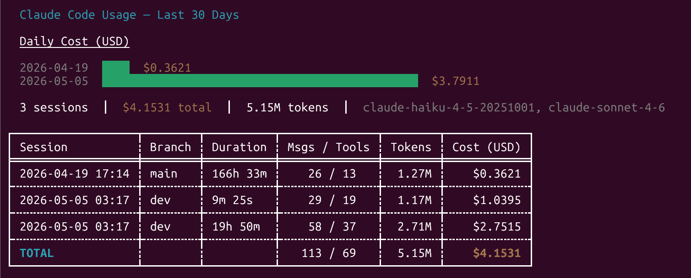

A terminal dashboard for Claude Code session statistics,
powered by a SessionEnd hook that writes a local JSONL log.

Both tools are native binaries — no Python or other runtime required.
Requires curl. Installs both binaries to ~/.local/bin and registers the hook.
curl -fsSL https://raw.githubusercontent.com/bradmontgomery/claude-usage/main/install.sh | bashBoth scripts download the pre-built binaries for your platform, install the SessionEnd hook, and register it in ~/.claude/settings.json. Safe to re-run.
Requires Rust / cargo.
git clone https://github.com/bradmontgomery/claude-usage.git
cd claude-usage
make install-hookmake install-hook builds both binaries, copies them to ~/.local/bin/, and registers the SessionEnd hook in ~/.claude/settings.json. Make sure ~/.local/bin is on your PATH.
Download the archive for your platform from the Releases page and extract both binaries (claude-usage and collect-session-stats) to somewhere on your PATH.
| Platform | Archive |
|---|---|
| Linux / WSL | claude-usage-linux-x86_64.tar.gz |
| macOS (Intel + Apple Silicon) | claude-usage-macos-universal.tar.gz |
| Windows | claude-usage-windows-x86_64.zip |
Then register the hook manually:
python3 hook/register.py /path/to/collect-session-statsStart (or finish) a Claude Code session to generate your first log entry, then:
claude-usageclaude-usage # last 30 days, cost chart
claude-usage --days 7 # last 7 days
claude-usage --chart tokens # token chart instead of cost
claude-usage --chart tokens --days 14| Flag | Default | Description |
|---|---|---|
-d, --days N | 30 | How many days back to include |
--chart cost|tokens | cost | Metric shown in the bar chart |
make build # debug build (both binaries)
make release # optimized build
make run # cargo run claude-usage (pass args after --)
make check # fast compile check, no binary produced
make install # build + copy both binaries to ~/.local/bin
make install-hook # install + register the SessionEnd hook
make clean # remove the target/ directoryToken pricing is defined in src/collect_session_stats.rs in the model_price function. If Anthropic changes pricing, update the values there, rebuild with make install, and re-run make install-hook to re-register.
Models not in the pricing table are tracked but marked as unpriced — the CLI will show a warning when this happens.
Each line in ~/.claude/usage-log.jsonl is a JSON object:
{
"session_id": "...",
"recorded_at": "2026-05-05T12:00:00+00:00",
"session_start": "2026-05-05T10:00:00Z",
"session_end": "2026-05-05T11:00:00Z",
"duration_ms": 3600000,
"message_count": 42,
"tool_call_count": 18,
"git_branch": "main",
"cwd": "/home/user/projects/myapp",
"total_cost_usd": 0.2341,
"models": {
"claude-sonnet-4-6": {
"input_tokens": 50000,
"output_tokens": 8000,
"cache_write_tokens": 12000,
"cache_read_tokens": 30000,
"cost_usd": 0.2341
}
},
"unpriced_models": []
}